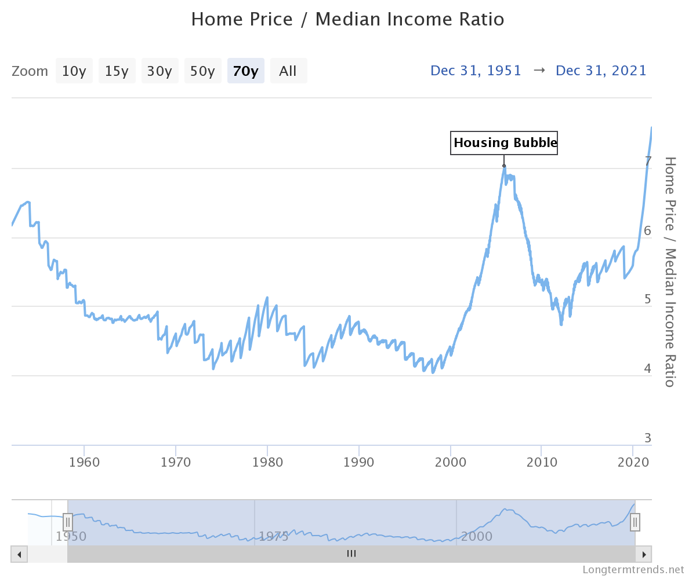
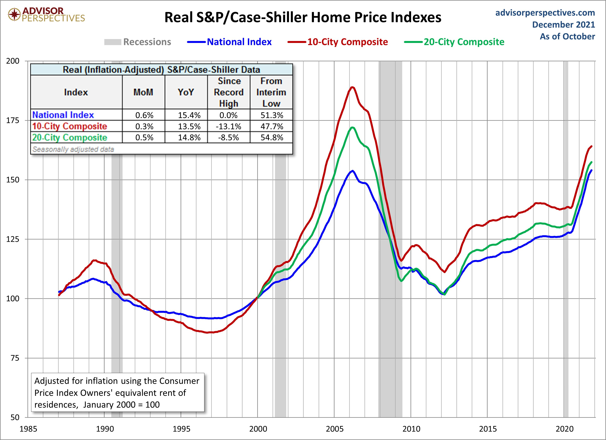
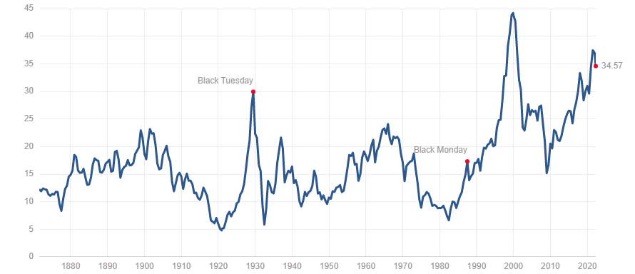

As the Market Burns
We have a long way to fall

I’m a young guy. I was born the year before the dot com bubble burst. I remember my parents talking about the Great Recession. Family friends were unemployed, and I was too young to understand why. My generation has no firsthand experience with life changing economic events.
That all changes this year.
The Housing Bubble
Michael Burry, investor and of “Big Short” fame, was an outspoken prophet of doom leading up to the housing market crash of 2008.
Something he said still rings true. When he noticed that the average home sales price was rocketing, but the median household income was unchanged, he recognized intuitively and accurately that the only thing accounting for the boom was leverage. Namely, individuals were indebted at rates far exceeding the norm.
Burry later asked the Federal Reserve and Congress: “if I could predict the Great Recession, why couldn’t you?”
They responded with an FBI investigation into all of his correspondences going back to 2003. At the end of their investigation, the Fed published a paper stating that the housing crash was entirely unpredictable. A “black-swan event”, they said.
It’s a good thing we have learned from those mistakes. Or have we?

What you’re looking at is the same trend Burry identified in 2005, now reincarnated. And with a vengeance.
Renowned Yale economist Robert Shiller is best known for his work in developing the Case-Shiller home price index. What his work found is that home prices, when adjusted for inflation, are rather stable, given a long enough time frame. This goes against the conventional wisdom that buying a house is an asset which appreciates in value, but his research has been shown to be true in the world of economics.
While it is true that houses increase in nominal value, this is almost entirely due to inflation.

What the Case-Shiller home price index currently shows is that homes are once again severely overpriced, and ripe for a correction.
Inflation and the Fed
Every American is aware of the impact that inflation has had on their personal finances. From soaring gas prices to wheat, inflation has reared its head everywhere.
Coming in at over 8%, we are at inflation levels which have not been seen in decades.
Contrary to popular belief, this has very little to do with Putin. Nor does it have as much to do with Biden as the political right would lead you to believe. To be sure, the “Build Back Better” plan would have been extremely negative for the inflation rate. But as it stands, the current situation has nothing to do with Trump, Biden or Putin.
No, it has everything to do with the Fed and monetary policy.
Most people know very little about the Fed. I believe that’s a mistake you cannot afford to make, as the Fed has essentially dictated the direction of markets since their inception.
[M2,_CPI,_PCE.webp]
Here we have a chart comparing the supply of M2 money with various metrics of inflation, such as the CPI and core CPI.
In laymen’s terms, M2 money represents all the money that is washing around in the economy. It’s a bit more nuanced than that, but it includes cash, checking accounts, and all “easily convertible near money”.
If you look closely at our chart, you will notice that M2 money supply spikes precede inflation rate increases with consistency.
Recent increases in M2 supply such as 2001 and 2009 reflected mass injections of cash into the economy through various monetary policies the Fed pursued in order to aid economic growth following substantial crashes and economic hardships.
Most recently, and most prominently, the Fed increased M2 supply to levels never before seen in the wake of COVID. By slashing interest rates to zero and pursuing aggressive quantitative easing programs, the Fed has had its desired affect of propping up markets and spurring economic growth.
But now the chickens have come home to roost. Inflation is off the charts.
While the Fed spent the year gaslighting us, calling inflation “transitory”, those who have been paying attention have seen this coming for a long time.
And while inflation will carry the news headlines, what few realize is that inflation is not the real worry.
As the strength of the US Dollar as the world reserve currency is the Fed’s primary mission and concern, they will use every tool they have to halt inflation. And they will succeed.
It’s how they do this that matters.
They’ll do this by raising interest rates, which will raise mortgage rates. This will take the demand out of the housing market. Prices will crash. Already mortgage rates have doubled from this time last year.
They’ll do this by dumping bonds and US treasuries on the open market. This will decrease the amount of cash in the economy drastically. Investors will become less speculative, as they have less spare cash to speculate with. Particularly big banks and investing firms. This will be a drag on the stock market.
But markets have survived Fed rate hikes and quantitative tightening before. The housing market is not nearly as precarious as 2008 either. While there is a housing bubble, it is not based on subprime mortgages.
But, there’s another problem. This one is far more concerning.
The Value is in the Cash Flows
What determines the value of a stock? I encourage you to ponder this question seriously, as in it lies a key to detecting market bubbles.
Is a stock’s value whatever people will pay for it?
Or is it the company’s total valuation divided by the number of shares?
While a stock’s price is both of these things, more fundamentally, a stock is worth the cash that the company is expected to bring in, both now and in the future.
A stock is overvalued when it’s priced at a higher level than the amount of cash they will eventually end up bringing in. Basically, investors get too optimistic.
(One way this would happen? A massive increase in the money supply, leading to consumers spending more. Consumers spending more boosts the corporate earnings. When the money supply drops as the Fed fights inflation, what happens next? Earnings drop; investor expectations are not met.)
One way that investors often use to gauge whether a stock is overvalued is the Price to Earnings ratio. Basically, it’s the market cap of the stock divided by the earnings of the company (or their profit).
More abstractly, it is the number of years that it will take to recoup the price you paid for the share at the time of purchase in corporate earnings.
[HistoricPEAverageWithBands.webp]
Taking a look at this chart, which I found here, we can see that P/E for the entire S&P 500 are rather elevated.
Another way to look at this is through the Shiller PE Ratio.

The astute observer will immediately notice extreme valuations often precipitate extreme market corrections. In fact, the Shiller PE almost always reverts from extremes eventually.
John Hussman, a retired Stanford economist and hedge fund manager, argues convincingly that revenues are better predictors of future stock performance than earnings.
If one takes his analysis as true, we are in for a decade of slightly negative or flat returns.
In the process, I would not be at all surprised by a major market correction, followed by a multi-year period of recouping the losses.
Investing Wisely in Uncertain Times
In sum, investors are looking at a war in Europe, a housing bubble, an aggressive Fed, off the charts inflation, ongoing COVID related supply chain issues and extremely overvalued markets.
Can markets push higher still? Absolutely. At the end of the day, the market can remain unpredictable longer than we can remain patient.
Markets will push higher as long as investors view overvalued stocks as better investments than cash.
Market corrections and crashes result when investors view cash as the best possible asset.
But, the savvy investor should consider if he is willing to risk a market crash in order to invest at record high valuations.
If the answer to that question is yes, he must be prepared for potentially spending years in the negative. Eventually, he is likely to come out on top.
If the answer to that question is no, that investor may very well find himself with the opportunity of a lifetime - to buy when all have sold.
I continue to advocate for patience. You’ll hear from me when that opportunity of a lifetime presents itself.
The information in this article is not to be considered as financial advice, nor is the author a licensed financial advisor. The statements reflected herein are to be regarded as the opinions of the author alone.